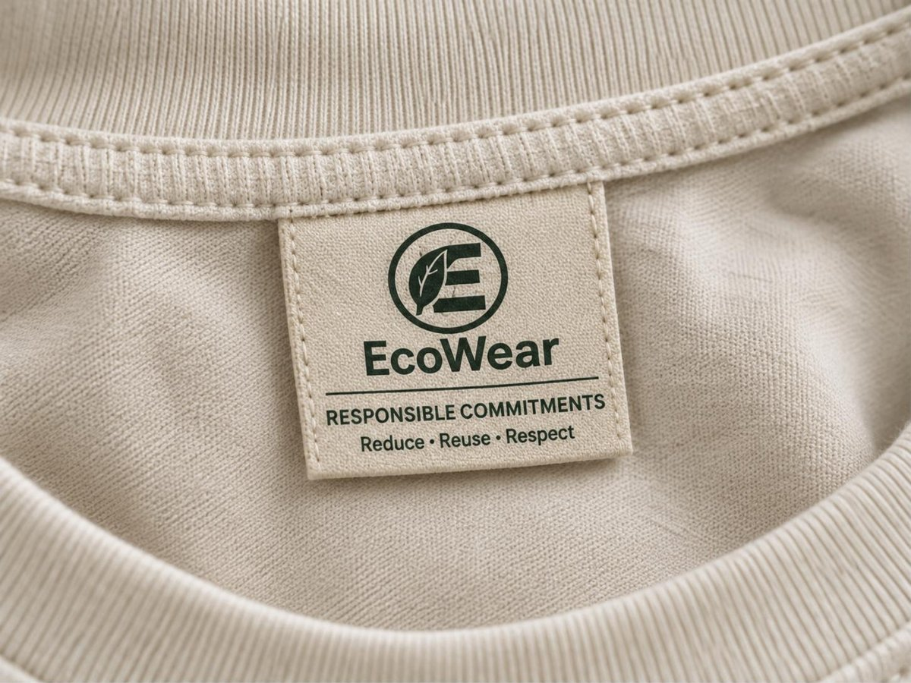

EcoWear certifies the environmental approach of small independent fashion creators, and helps you find them. Every certified creator is checked against public criteria by an independent auditor.
An independent creator tests their approach with our self-assessment, then sends us a file on their materials, workshop, packaging and repairs.
2. An auditor checks
An independent auditor scores six public criteria. With 20 points out of 30, and at least 2 in every criterion, the creator gets the label.
3. The label makes them visible
Certified creators join our directory, our shop and our stories. You can check every label with its certificate number.
Look for the label

When you see this label inside a collar or on a hang tag, you know that the creator of the piece has been checked by an independent auditor against our six public criteria.
Each certified creator also has a certificate number. Type it on our label page to see their scores and the date of their next audit.
EcoWear was born in Lyon in 2026. Josh, Jules and Joseph kept meeting talented independent creators who mend, upcycle and make clothes and accessories in small batches, with real care for the planet. Yet next to big brands and their advertising, these creators were almost invisible, and their customers had no simple way to tell a sincere approach from greenwashing.
Most existing certifications were designed for large companies: long, expensive and hard to obtain for a workshop of one or two people. So we created EcoWear, a label built for independents. Our six criteria are public, every creator is checked by an independent auditor, and our fees follow the size of each business.
The label is only half of the story. Every certified creator joins our directory, sells pieces in our shop and appears in our stories, so that the effort they make for the environment becomes the reason why customers find them. In return, they agree to be checked again every year, because a label is only worth the trust it earns.
Our mission
To make the environmental efforts of independent creators credible and visible, so that choosing a responsible piece becomes simple.
Our six criteria are public, and open to every independent creator who can meet them.
Audits are carried out by independent auditors, not by our team.
The label is valid for one year, then a new audit is needed.
A creator who stops meeting the criteria loses the label.
Our fees are made for small workshops.
-->
Contact us
EcoWear SAS
144 Av. Jean Jaurès, 69007 Lyon, France
Email: hello@ecowear.example
Phone: +33 4 00 00 00 00
Open Monday to Friday, 9 am to 6 pm
Each of us answers one kind of question: Jules for our criteria and the audits, Josh for fees and payments, and Joseph for the website and our stories.
Write to the right person on our contact page, or read our FAQ first.